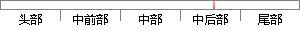

孔融知道这件事后，专门给曹操写了一封信，说当年周武王伐纣的时候肯定将妲己抢来赐给了自己的儿子周公。
片段位置图

相似结果|
1
原句片段：孔融知道这件事后，专门给曹操写了一封信，说当年周武王伐纣的时候肯定将妲己抢来赐给了自己的儿子周公。
相似片段 1：曹操攻下邺城,曹丕将袁熙的妻子甄氏抢来做了自己的老婆。孔融知道这件事后,专门给曹操写了一封信,说当年周武王伐纣的时候肯定将妲己抢来赐给了自己的儿子周公。曹...
|
※ 片段修改建议 ※
近似词参考：- 知道：晓得
- 事后：过后
- 当年：昔时
- 时候：时辰 时刻 时间
- 肯定：必定 一定 确定
- 赐给：赏给
- 自己：本身
系统自动生成语句：孔融晓得这件过后，专门给曹操写了一封信，说昔时周武王伐纣的时辰必定将妲己抢来赏给了本身的儿子周公。
注：本片段修改建议为系统自动生成，仅供参考。